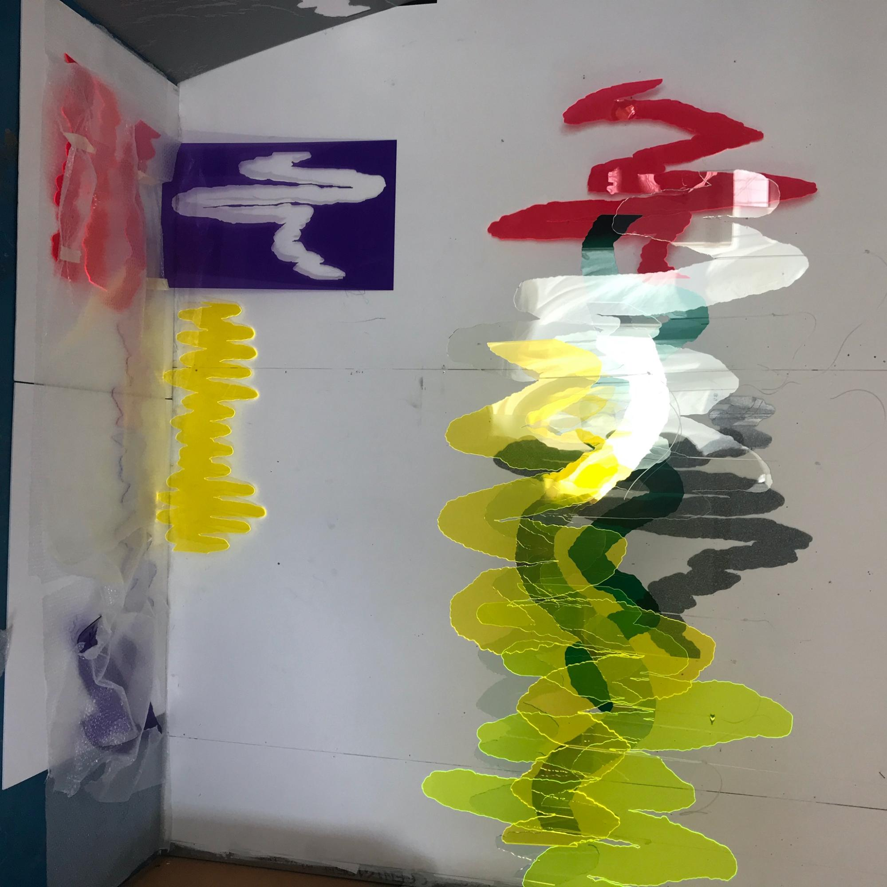

Phase 1

Mindscapes started with a pilot data collection carried out through the Covid lockdowns and across moments when restricitons were eased. We used a Muse EEG portable and non-invasive headset and asked people from a variety of occupational areas to wear it while performing a choice activities to include a work-related/productive activity, a leaisure activity and a moment of physically inactive mental relaxation/pure thinking/daydreaming. After recording the brainwave signals, people were also asked to recollect their experience and recount it in words, so to enable connections between the two and identifying soft information to later inform the visualisation of the data.
Due to Covid taking the global scene right at the start of our project, some of our intentions, collection methods and interests had to be readapted (eg to comply with health and safety and covid regulations) or reframed. The range of the initial group of participants was tailored to sample the professional and social roles that felt more representative of this historical moment (the NHS/key worker, the worker from home, the mum…), as well as covering a range between screen-based, creative and physical labour works.
Our initial intention was to consider data from urban informatics that may address the divide between productive work activities and activities that engage the visual mind in a non-utilitarian way (leisure, culture, sleep and more), with attention to the different patterns across diverse groups and the consequent impact on wellbeing. Once again because of the pandemic, it became relevant to include where and when the recorded activities happened wihtin the home or in a workplace, outdoors and in green areas or indoors. Acknowledging the new factors brought about by the pandemic, we hope to expand to comment on the relevance of imaginative moments as a coping method to the situation.
Phase 2

Starting from her experience working with laser cut fluorescent, reflective and transparent acrylic glass, Maria Teresa Ortoleva will work towards transforming the graphic representation of complex multidimensional and multivariate spectral data into sculptural objects of coded colours, textures and surface qualities that aim at operating perceptually, symbolically and empathically to convey the content of the analysis in an accurate and yet accessible and eloquent way. The same method will inform choices in placing the produced sculptural renditions of data in space: their heights, distances and layout, and how they engage with viewers.
The expected result will be an immersive and sensorial visualisation of a collective mindscape showing the ratio between conscious productive activity and moments of speculative thinking and imagination in urban lifestyles, and pointing at the importance of this balance to health and wellbeing.
Timeline
- King’s residency launch
- CUSP Lecture
- Data Collection
- Equipment (Muse eeg device)
- Format
- Users
- Data types
- Samples
- Fotos
- Text
- Voice Over (?)
- KURF App
- Gemma Recording (film): documenting work
- Sketches – studies
- JPEGs of digital sketches of the creative/ thinking process behind the visualisation (**)
- Any that can be relevant (mostly picture content, but allow for short description text)
- Students Projects 2 x UG
- First physicalisation attempts/ prototypes
- - photos documenting material experiments
- - photos from MTO’s studio (***) 
- - Any that can be relevant (mostly picture content, but allow for short description text)